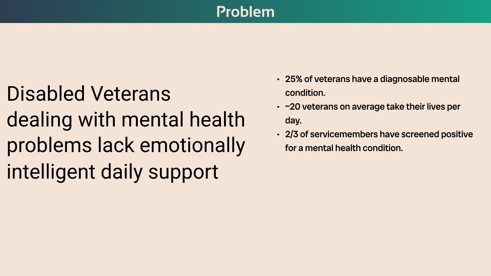
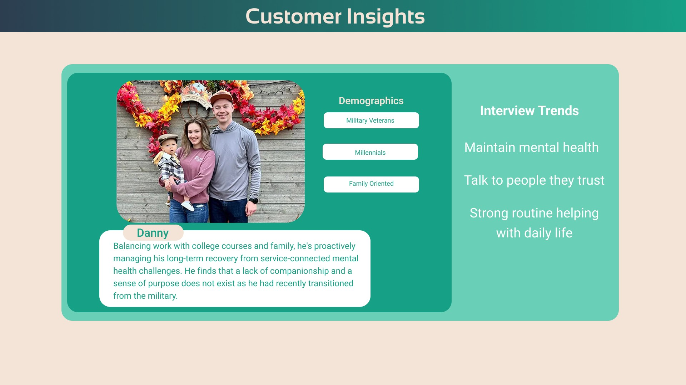
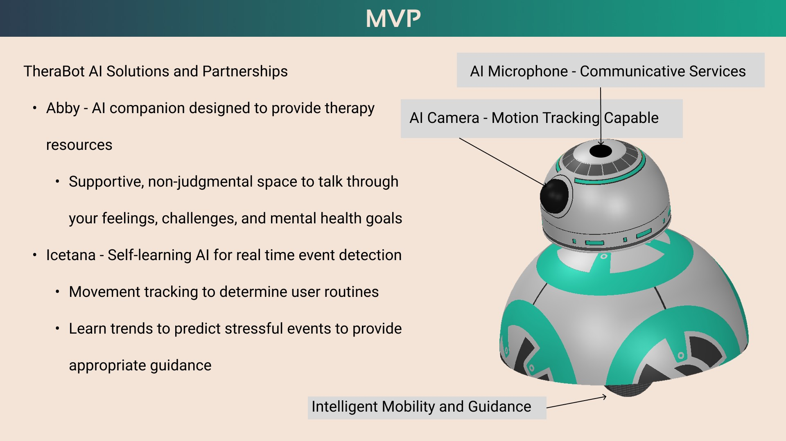
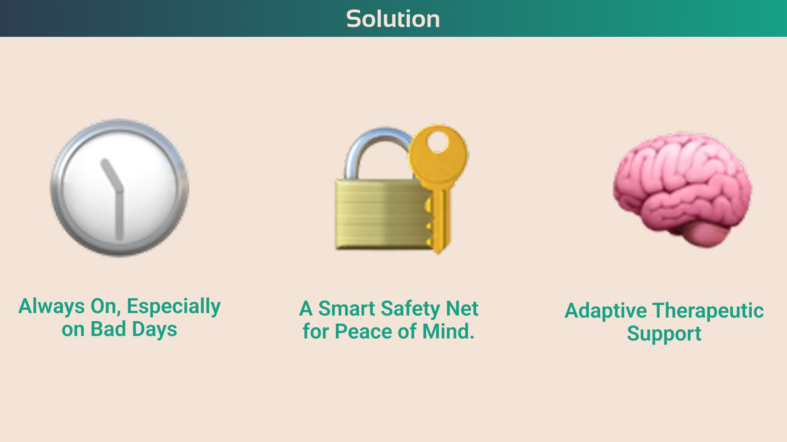
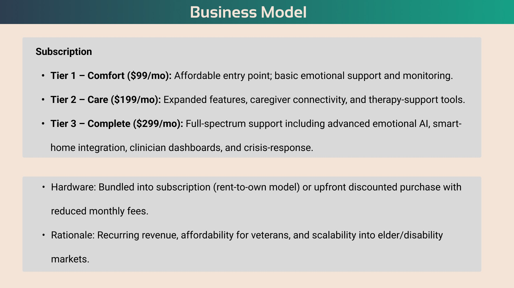
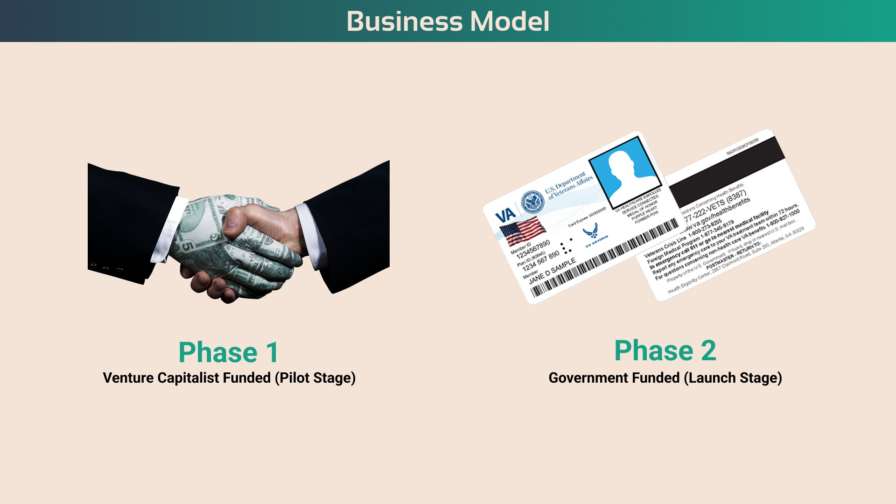
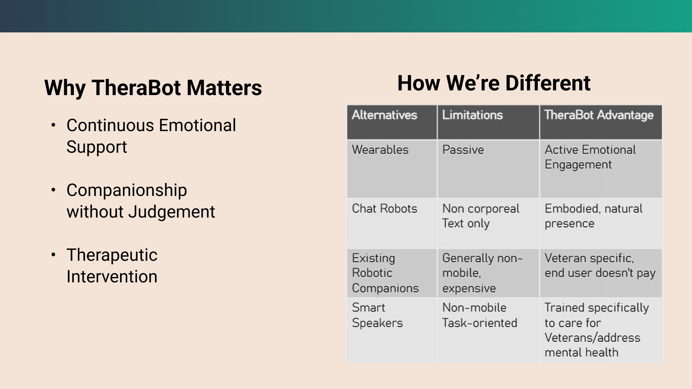
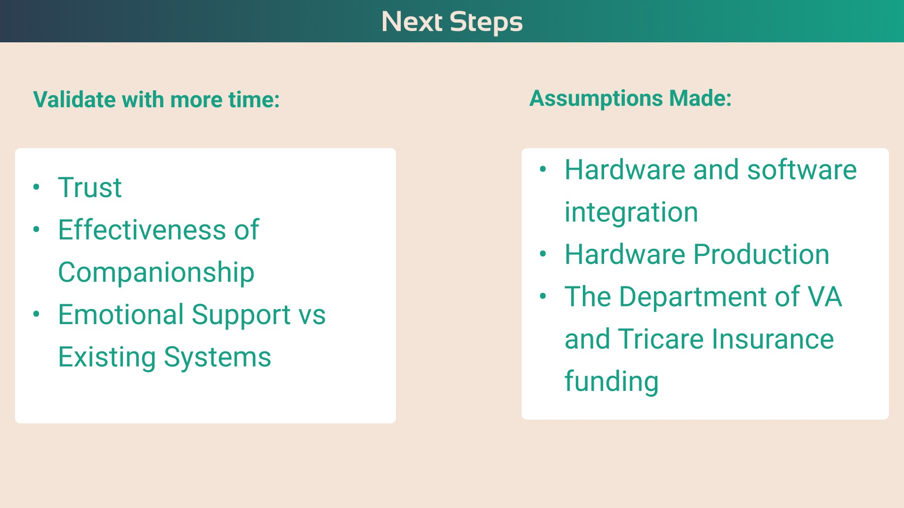

Product concept
Therabot.
Technology with a human touch.
TheraBot is a concept for a robot designed to support the mental health of veterans. The project explored assistive technology focused on support and trust.
My team and I wanted to try and make something that would work almost like a service animal, but less expensive upkeep.
SECTION 01 / 09
Introducing a companion concept
TheraBot explores a robotic companion intended to support military veterans in daily life. The pitch combines assistive technology, companionship, and a focus on trust.

SECTION 02 / 09
Defining the support gap
The problem statement focuses on the need for consistent, emotionally aware support. This is the team’s concept framing, not evidence that the proposed device has demonstrated clinical benefit.

SECTION 03 / 09
Designing around daily routines
The persona and interview themes emphasize trusted relationships, mental wellbeing, and a stable routine. Those needs help define the intended experience before specifying technology.

SECTION 04 / 09
Exploring a minimum viable concept
The diagram proposes sensing, communication, and mobility capabilities. These are planned features and partnership ideas, rather than a description of a working, validated product.

SECTION 05 / 09
Making the intended benefits clear
The solution is organized around availability, reassurance, and adaptive support. Presenting these themes together helps explain the ambition of the concept in everyday terms.

SECTION 06 / 09
Thinking through access and cost
The subscription options explore how hardware and ongoing support might be packaged. Pricing and service levels are business-model proposals that would require validation.

SECTION 07 / 09
A proposed path to funding
The funding sequence separates an early pilot from a possible later launch. Partnerships and funding sources are presented as assumptions, not secured relationships.

SECTION 08 / 09
Comparing forms of support
The comparison asks what an embodied companion could offer alongside other tools. Its proposed advantages are hypotheses for future evaluation, especially around trust and usefulness.

SECTION 09 / 09
Naming what still needs validation
The next steps identify trust, companionship, integration, and funding as open questions. This makes the boundary between an early concept and a responsible product-development plan explicit.
